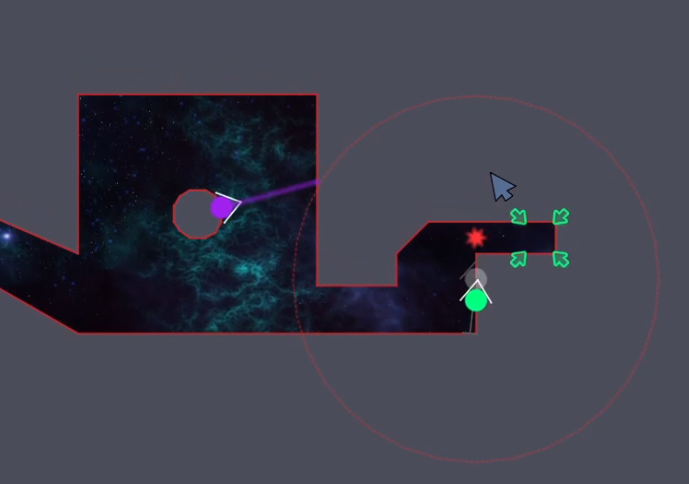
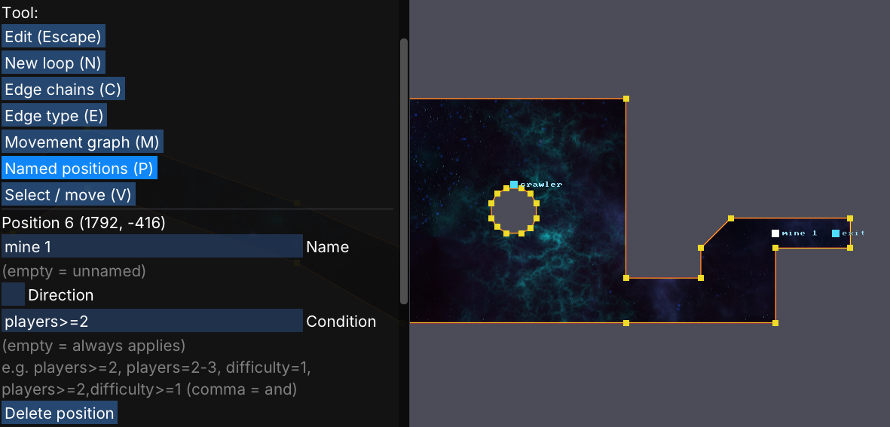
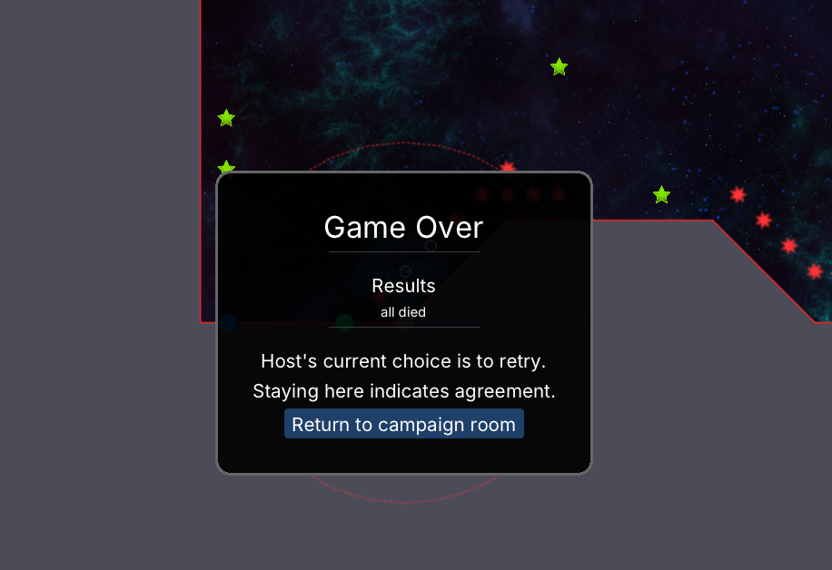
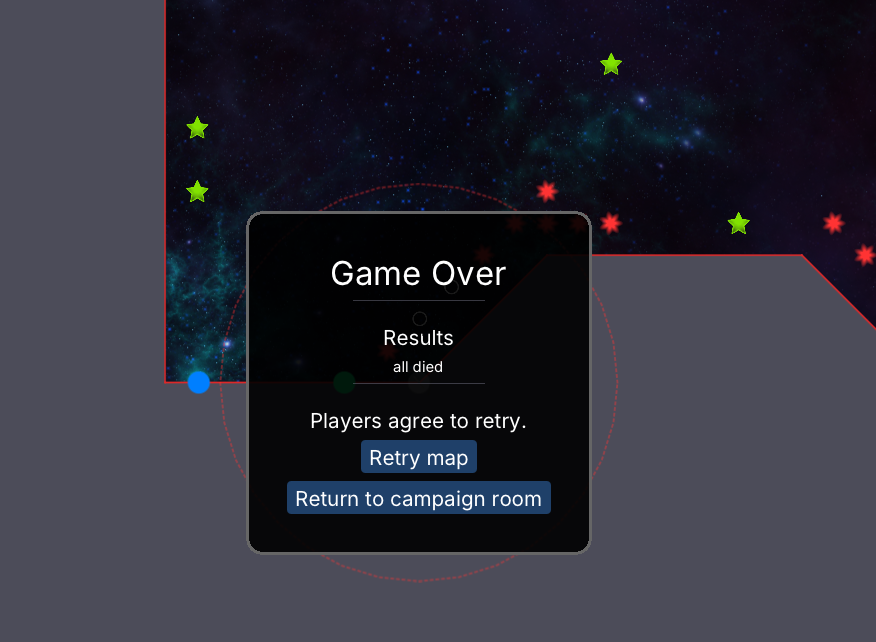

Placing stuff conditionally, campaign mode, fast retry
4 September 2026
Ok, so the main thrust of recent development has been a kind of 'campaign mode'.
Before this, after you completed the tutorial and went into the online part of the game, you would just choose from a big bag of playable levels. In testing videos, or when watching people playing, I would then see everyone just essentially start with the first in the list, or one they like the sound of, neither of which is likely to actually be the best map to start off with.
Apart from being difficult, most testers play single player, and the first level I saw people playing was actually not completable by a single player.

In this level, for Spirits, there is a mine blocking the narrow gap leading to the exit at the end of the level. This is a kind of cliché copied from N++. The point is that the level is actually designed for two players. The first player to reach the exit can then detonate this mine, dying in the process, but opening up the way for the second player to complete the level.
To make things worse, the config let me specify the different player counts the level was intended for, but the actual interface you would see would just tell you something about the level 'not being eligible for highscores'.
Of course, that interface could be improved, and a mechanism could be added to prevent you playing this level single player, but that's just more friction, and less possibilities for the player, and I was able to find a much better solution for this.

The solution, as shown in this screenshot of the level editor was to add the possibility to make things placed in the world conditional. So, in this case, that mine is only actually added if there is actually more than one player. (This way, the map actually becomes playable in this case.)
I also added the possibility to make placed items conditional on difficulty, since this also fits well with the idea of conditional placement. Taken together, these two conditional placement conditions then really help with generating a set of different maps to fill out a campaign, without having to do things like copying and modifying maps for these kinds of detail tweaks.
Campaign mode
The new campaign mode is very strongly inspired by the grid of levels in the N++ campaign, and I like the idea, in particular, that you get a kind of branching structure from this, and some choice about how exactly you prefer to proceed through the levels in the campaign.
So you start off with only the top left level in a grid being unlocked, and as you start to complete levels, the levels to the right and below the completed levels then also become available to play.
I recently added a thumbnail generation feature, which does a trick with creating a temporary game session, calling the normal render() method for the game, and capturing the resulting image in a texture for use as a thumbnail.
I modified this to add some caching and limit the number of new thumbnails that can be generated on any frame to 2, and then a thumbnail image can be rendered for each grid element in the campaign. (Locked elements get no thumbnail, and you just see a grey rectangle with a question mark, for these.)
The actual lobby mechanism didn't need any modifications to support this, initially. (I had previously added the possibility to change map selection in an active game room, which was actually the main prerequisite for this.)
I did add the possibility to create 'invite only' rooms, since there is a good chance you want to be able to choose who you want to play with, for an online co-op campaign. This was fairly complicated, but is also now available for 'normal' multiplayer rooms, and is a good thing to have, I think.
Fast retry loop after failed attempts
Apart from that, one thing I really wanted to improve was to make it much easier for players to retry a level after failure.
The point is that, as with N++, there is an intention that the levels can get pretty hard, but they don't take long to play, and then it really is supposed to be "if at first you don't succeed, try, try again".
In the previous release, after dying, you would get:
- The game end screen with the results, shown in game (click to move on)
- A post game results screen showing things like highscore updates (very nice to have if you actually got a highscore, but a pain when you just failed, click again to move on)
- Back in the game lobby, but you need to indicate you are ready, before the host can retry (if they actually agree)
- The host then needs to actually start the game
It took a lot of thinking to find some way to really cut back that sequence, without redesigning all the lobby server and client interactions, but now, on the client side you get the following shown after a game ending in failure:

And then, on the host side, after a short delay to give other players the chance to quit out if they want, you get:

Map 'nominations'
The one thing left for the campaign rooms, to make things work for co-op players not also on voice chat, was to give non-host players some way of indicating which map/level they would like to play next.
The design chosen for this was for non-host players to be able to 'nominate' which map they would like to play. This nomination is then purely informational, and the host can choose to take it into account or ignore it, but the non-host players nevertheless remain able to click ready or not click ready.